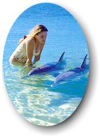

|
Swim
with Dolphins
 |
Bright beaches and beautiful blue
mountains. Wandering and window-shopping. Cruising on a
catamaran. Eucalyptus and lemon. Seeing eye to eye with
a Bottlenose Dolphin!
|
Your adventure 'Down Under'
officially begins at the edge of the vast sands of the Western
Australia Desert, in the colorful city of Perth. Here, youll
explore Kings Park (a patch of untamed bush-land), walk along the
banks of the lovely Swan River and visit a vibrant downtown area
which has earned the city a reputation for being one of the most
beautiful in the world. Just outside the city limits, youll be
amazed by the geographical diversity youll
encounter--extraordinary rock formations, stunning waterfalls and
pristine coastlines with vast, empty beaches.
The
next stop? Bunbury Bay and the award-winning Dolphin Discovery
Center where a resident pod of Bottlenose Dolphins has been
interacting with humans for more than ten years. While
spending time here, youll have the opportunity to meet the
dolphins of Bunbury Bay. We're looking forward to
introducing you to 'Cookie,' 'Stumpy' and 'Sharkey' as well as a
few of our other fine, flippered friends!
After
a brief return to Perth, youll fly north to Monkey Mia, the
'Dolphin Capital' of the world! Since the early 1960's, wild
Bottlenose Dolphins have been visiting the warm, shallow waters of
Shark Bay beach--within wading distance from the shore--much to
the delight of the two-legged visitors in attendance.
Exceptionally friendly and always playful, the dolphins are know
to 'play up' to their many admiring audiences.
While
in Monkey Mia, youll learn more about the dolphins and their
somewhat uncanny interest in humans. In addition, youll also
set sail on the open ocean in search of a few endangered (and
endearing) Dugong. Its also in the vicinity of Monkey Mia that
youll explore an ancient, Aboriginal cave dwelling, visit a
remote farmstead and take a walk on one of the worlds most
unusual beachesShell Beach, which as its name implies, is
composed entirely of tiny, white seashells!
Finally, no trip to Australia would be complete without the
opportunity to see the sights of Sydney--the oldest settlement in
Australia and one of the most spectacular cities in the world.
From its picturesque harbor to its famous Opera House, Sydney is a
world-class city characterized by an unusual combination of
fast-moving urban life and surprising, small town charm.
|